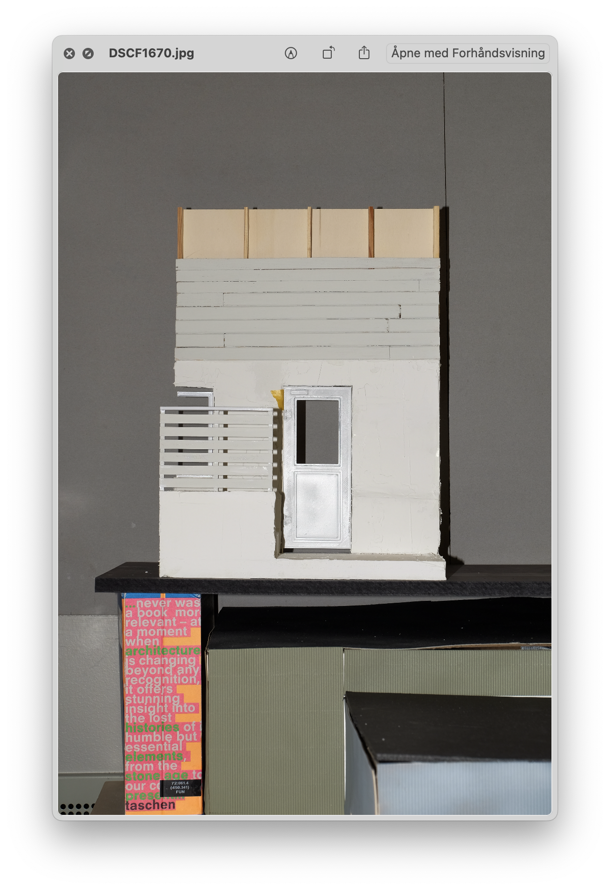
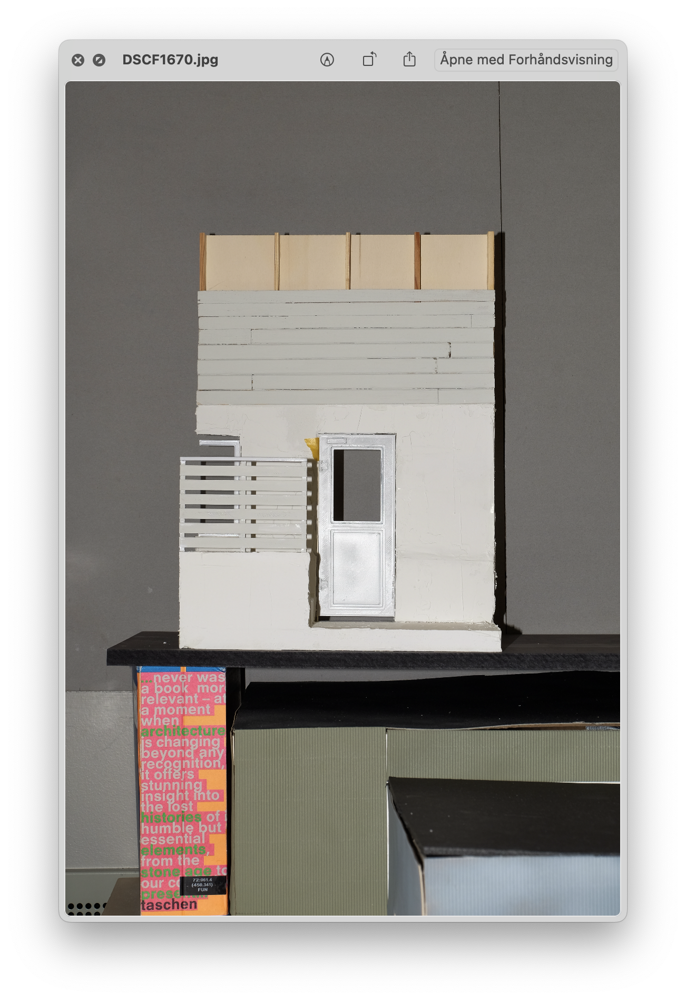
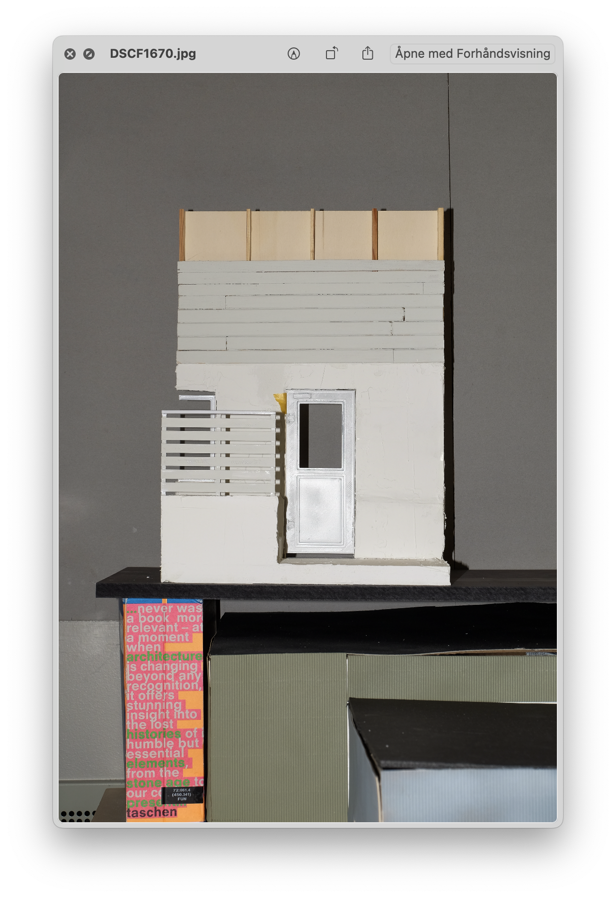

Stormarksvegen, Fedje
Totalrennovering og tilbygg på eksisterende enebolig fra 1950-tallet. Prosjektet er delt opp i faser hvor en kjeller-rehabilitering muliggjør utvidelse av både inngangsparti og oppholdsrom. Det dannes et nytt trappeløp
